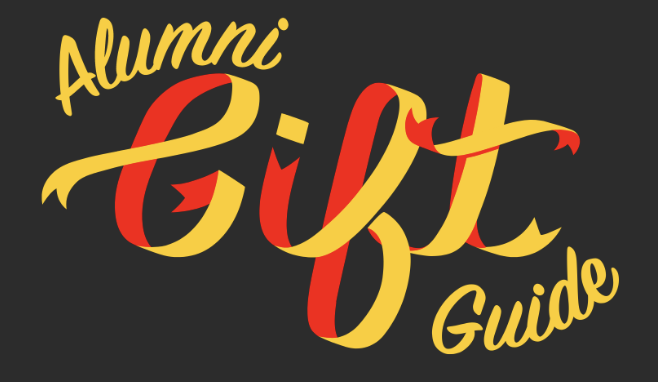
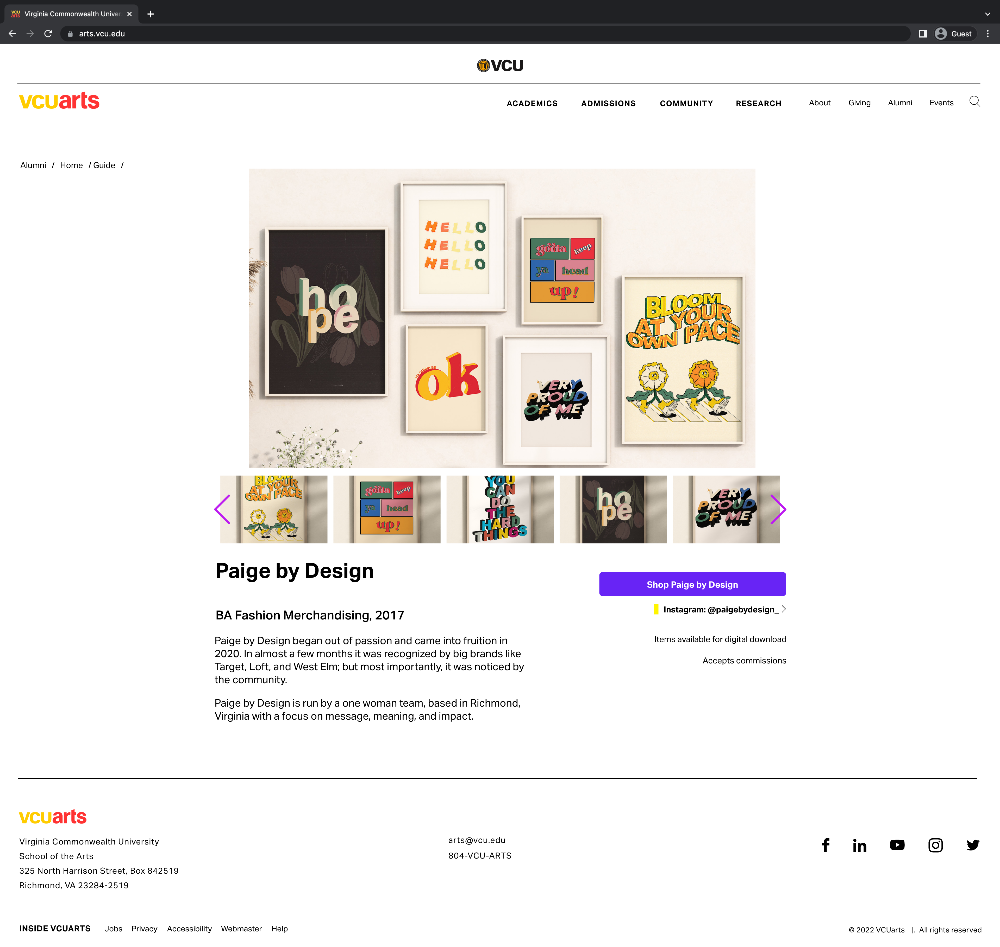
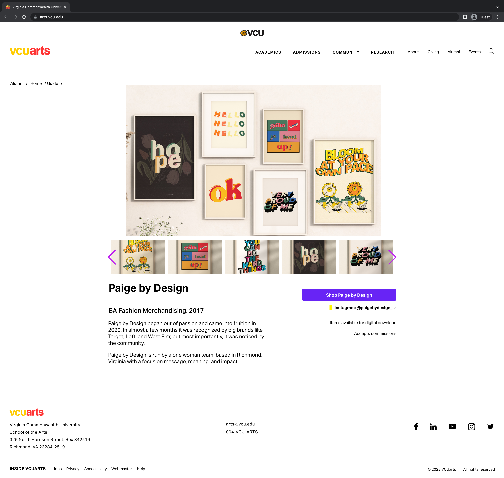

VCUarts Alumni Gift Guide
outcome: website design
role: web design, UI/UX design
tools:
adobe XD CSS/Sass HTML PHP Wordpress Figma
time period: May – October 14, 2022
project summary:
A website focused on documenting and displaying VCUarts Alumni work and businesses to bring greater attention to alumni entrepreneurs
In my internship with VCUarts, I spent the summer of 2022 to October planning, designing, and developing the website for the inaugural VCUarts Alumni Gift Guide, which launched on Oct. 14th, 2022. The guide displays artwork from Alumni business from all walks of VCUarts.

I was the primary experience and interface designer for the website, and I worked with Adobe XD and Figma to create wireframes, low fidelity, and high fidelity mockups. Using the original branding of the VCUarts website, I used agile methodologies to develop the design of the site, including user interviews and user testing. I also helped to develop branding options for the project.
I also helped with the development of the site, but due to problems with the developer, the final site did not match the design mockups. Nonetheless, I helped to make sure the site launched by creating custom HTML, Sass (scss), and PHP code, as well as working within the VCUarts Wordpress site.
Below, you can see examples of low fidelity mockups and high fidelity mockups. You can also click here for high fidelity interactive mockups
low-fidelity mockups
high-fidelity mockups
 
